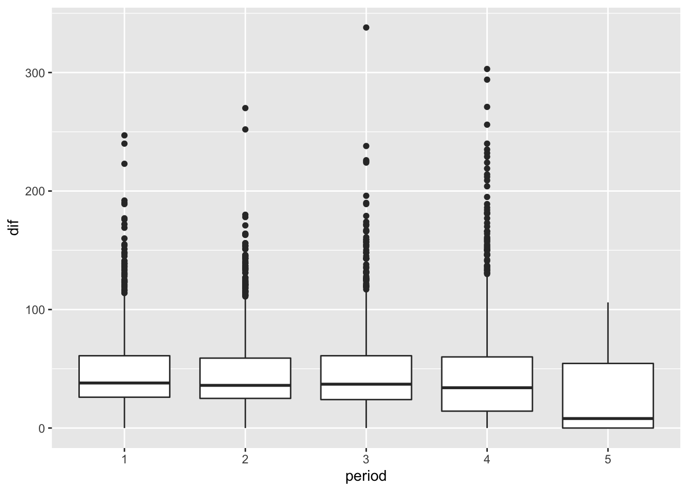

13.6 O pacote lubridate
library(dplyr)
library(lubridate)
library(ggplot2)
lakers <- tibble::as_tibble(lakers)1. Repare que a coluna date no data.frame é um vetor de inteiros. Transforme essa coluna em um vetor de valores com classe date.
lakers %>%
mutate(date = ymd(date))
## # A tibble: 34,624 x 13
## date opponent game_type time period etype team player result points
## <date> <chr> <chr> <chr> <int> <chr> <chr> <chr> <chr> <int>
## 1 2008-10-28 POR home 12:00 1 jump … OFF "" "" 0
## 2 2008-10-28 POR home 11:39 1 shot LAL "Pau G… "miss… 0
## 3 2008-10-28 POR home 11:37 1 rebou… LAL "Vladi… "" 0
## 4 2008-10-28 POR home 11:25 1 shot LAL "Derek… "miss… 0
## 5 2008-10-28 POR home 11:23 1 rebou… LAL "Pau G… "" 0
## 6 2008-10-28 POR home 11:22 1 shot LAL "Pau G… "made" 2
## 7 2008-10-28 POR home 11:22 1 foul POR "Greg … "" 0
## 8 2008-10-28 POR home 11:22 1 free … LAL "Pau G… "made" 1
## 9 2008-10-28 POR home 11:00 1 foul LAL "Vladi… "" 0
## 10 2008-10-28 POR home 10:53 1 shot POR "LaMar… "made" 2
## # … with 34,614 more rows, and 3 more variables: type <chr>, x <int>, y <int>Repare que as_date() não funciona neste caso.
lakers %>%
mutate(date = as_date(date))
## # A tibble: 34,624 x 13
## date opponent game_type time period etype team player result points
## <date> <chr> <chr> <chr> <int> <chr> <chr> <chr> <chr> <int>
## 1 56949-12-27 POR home 12:00 1 jump … OFF "" "" 0
## 2 56949-12-27 POR home 11:39 1 shot LAL "Pau G… "miss… 0
## 3 56949-12-27 POR home 11:37 1 rebou… LAL "Vladi… "" 0
## 4 56949-12-27 POR home 11:25 1 shot LAL "Derek… "miss… 0
## 5 56949-12-27 POR home 11:23 1 rebou… LAL "Pau G… "" 0
## 6 56949-12-27 POR home 11:22 1 shot LAL "Pau G… "made" 2
## 7 56949-12-27 POR home 11:22 1 foul POR "Greg … "" 0
## 8 56949-12-27 POR home 11:22 1 free … LAL "Pau G… "made" 1
## 9 56949-12-27 POR home 11:00 1 foul LAL "Vladi… "" 0
## 10 56949-12-27 POR home 10:53 1 shot POR "LaMar… "made" 2
## # … with 34,614 more rows, and 3 more variables: type <chr>, x <int>, y <int>Para entender porque a função devolveu um dia do ano 56949, rode os códigos abaixo.
as_date(0)
## [1] "1970-01-01"
as_date(-3:3)
## [1] "1969-12-29" "1969-12-30" "1969-12-31" "1970-01-01" "1970-01-02"
## [6] "1970-01-03" "1970-01-04"
as_date(20081027:20081029)
## [1] "56949-12-26" "56949-12-27" "56949-12-28"2. Crie uma coluna que junte as informações de data e hora (colunas date e time) em objetos da classe date.
lakers %>%
mutate(date_time = paste0(date, " 00:", time) %>% ymd_hms) %>%
select(date_time)
## # A tibble: 34,624 x 1
## date_time
## <dttm>
## 1 2008-10-28 00:12:00
## 2 2008-10-28 00:11:39
## 3 2008-10-28 00:11:37
## 4 2008-10-28 00:11:25
## 5 2008-10-28 00:11:23
## 6 2008-10-28 00:11:22
## 7 2008-10-28 00:11:22
## 8 2008-10-28 00:11:22
## 9 2008-10-28 00:11:00
## 10 2008-10-28 00:10:53
## # … with 34,614 more rows3. Crie as colunas dia, mes e ano com as respectivas informações sobre a data do jogo.
lakers %>%
mutate(
date = ymd(date),
dia = day(date),
mes = month(date),
ano = year(date)
) %>%
select(date, dia, mes, ano)
## # A tibble: 34,624 x 4
## date dia mes ano
## <date> <int> <dbl> <dbl>
## 1 2008-10-28 28 10 2008
## 2 2008-10-28 28 10 2008
## 3 2008-10-28 28 10 2008
## 4 2008-10-28 28 10 2008
## 5 2008-10-28 28 10 2008
## 6 2008-10-28 28 10 2008
## 7 2008-10-28 28 10 2008
## 8 2008-10-28 28 10 2008
## 9 2008-10-28 28 10 2008
## 10 2008-10-28 28 10 2008
## # … with 34,614 more rows4. Em média, quanto tempo o Lakers demora para arremessar a primeira bola no primeiro período?
Dicas: arremessos são representados pela categoria shot da coluna etype e cada período tem 12 minutos.
lakers %>%
dplyr::filter(etype == "shot", period == 1, team == "LAL") %>%
dplyr::mutate(
time = hms(paste0("00:", time)),
cronometro = 12*60 - minute(time)*60 - second(time)
) %>%
dplyr::group_by(date) %>%
dplyr::filter(cronometro == min(cronometro)) %>%
dplyr::ungroup() %>%
dplyr::summarise(media = mean(cronometro))
## # A tibble: 1 x 1
## media
## <dbl>
## 1 29.6O que foi feito:
Primeiro filtramos a base para arremessos,
etype == "shot", do primeiro período,period ==, que fossem do Lakers,team == "LAL".Em seguida, mudamos a classe da coluna
time, decharacterparaperiod, e criamos a colunacronometro, que contém o tempo passado (em segundos) até o instante do evento.Então agrupamos a base pelo dia e a filtramos apenas para o primeiro evento de cada dia, isto é, o evento que tem o menor valor na coluna
cronometro. Assim, a colunacronometroda base resultante terá o tempo do primeiro arremesso de cada jogo.Por fim, desagrupamos a base e calculamos a média da coluna
cronometro.
5. Em média, quanto tempo demora para sair a primeira cesta de três pontos em cada um dos quatro períodos? Considere toda a base, e cestas de ambos os times.
lakers %>%
dplyr::filter(etype == "shot", period %in% 1:4, points == "3") %>%
dplyr::mutate(time = hms(paste0("00:", time)),
cronometro = 12*60 - minute(time)*60 - second(time)) %>%
dplyr::group_by(date, period) %>%
dplyr::filter(cronometro == min(cronometro)) %>%
dplyr::ungroup() %>%
dplyr::group_by(period) %>%
dplyr::summarise(media = mean(cronometro))
## # A tibble: 4 x 2
## period media
## <int> <dbl>
## 1 1 202.
## 2 2 219.
## 3 3 203.
## 4 4 192.A resolução desse exercício é análoga ao anterior, só mudamos o filtro inicial e o agrupamento. Se você ficou com dúvidas, consulte o passo a passo na resolução do exercício 4.
Repare que não precisarímos filtrar por etype == "shot", já que o único evento que gera 3 pontos é a cesta de 3 pontos.
6. Construa boxplots do tempo entre pontos consecutivos para cada períodos. Considere toda a base de dados e apenas pontos do Lakers.
lakers %>%
filter(points > 0, team == "LAL") %>%
dplyr::mutate(
time = hms(paste0("00:", time)),
tempo_segundos = 60 * minute(time) + second(time),
dif = tempo_segundos - lead(tempo_segundos),
period = as.character(period)
) %>%
filter(dif >= 0) %>%
ggplot(aes(x = period, y = dif)) +
geom_boxplot()
7. Qual foi o dia e mês do jogo que o Lakers demorou mais tempo para fazer uma cesta? Quanto tempo foi?
cesta_demorada <- lakers %>%
filter(points > 0, team == "LAL", period == 1) %>%
dplyr::mutate(
time = hms(paste0("00:", time)),
time = 60 * minute(time) + second(time),
date = ymd(date),
dia = day(date),
mes = month(date),
) %>%
group_by(date) %>%
filter(time == max(time)) %>%
ungroup() %>%
slice_min(time)
cesta_demorada %>%
select(date, opponent, dia, mes)
## # A tibble: 1 x 4
## date opponent dia mes
## <date> <chr> <int> <dbl>
## 1 2009-04-12 MEM 12 4
tempo_seg <- 12*60 - cesta_demorada$time
seconds_to_period(tempo_seg)
## [1] "2M 37S"